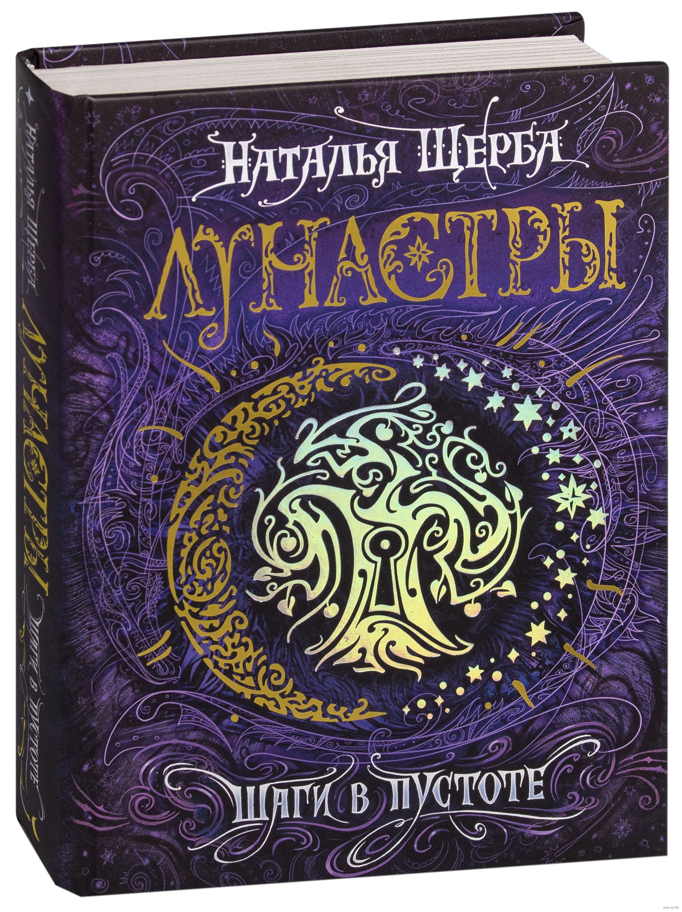

Книга "Лунастры: Шаги в пустоте"

Двуликий мир на пороге великого Часа Затмения. Кто проложит путь в таинственный Астралис: белый дракон сильвебр или черный дракон аурум? Кто завладеет новым миром: астры или лунаты? И что если корни этого противостояния уходят в самые ранние времена? А у жителей древней Фамагусты тоже есть свои планы? Тим Князев, Селестина Святова и Алекс Волков ищут свое место в мире в эти трудные времена, они чувствуют, что наступает момент, когда приходится, рискнув всем, сделать шаг в Пустоту. Но хватит ли на это смелости? И что ждет там, за Великим Пределом – жизнь или смерть?